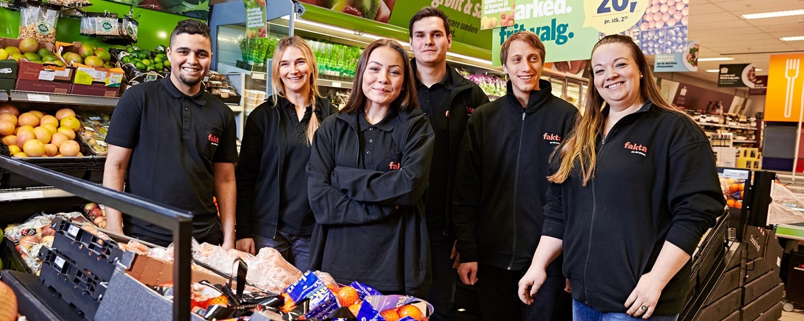

Home
Her er vores styleguide til spillet for COOP. Spillet hedder Varejagt, den skal hjælpe forældre, som er nødsaget til at handle ind med børn i alderen 0-8 år. Dette spil er designet til at være/blive en forlængelse af COOP´s nuværende hjemmeside. Derfor vil stilen vi arbejder med have en stor lighed med COOP's nuværende styleguide.
